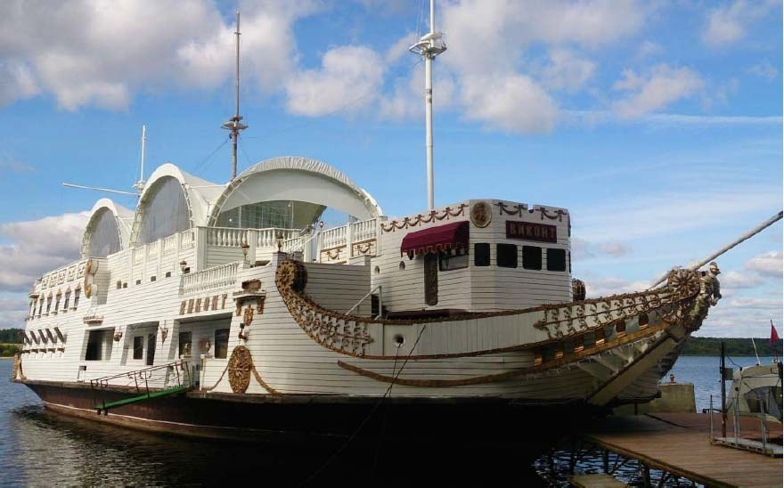
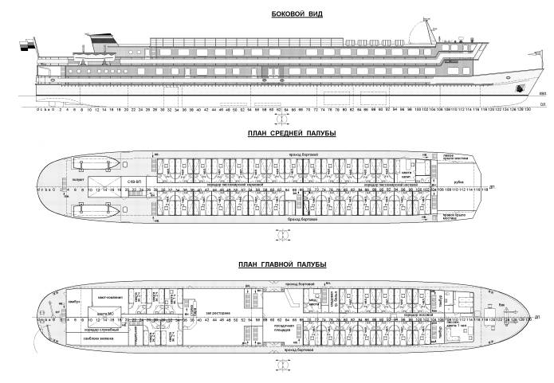

Знакомимся
Обсуждаем назначение судна, ваши цели и предполагаемые изменения.
БЮРО КОРАБЕЛЬНЫХ ИНЖЕНЕРОВ
МОСКВА / РЕКА — МОРЕПроектируем переоборудование
и модернизацию флота.
От замысла до инженерного решения.

ИНЖЕНЕРИЯ В ДЕТАЛЯХ01 / ПОРТФОЛИО
ОТ КОНЦЕПЦИИ ДО ВОПЛОЩЕНИЯНовая функция, другая компоновка,
современное оснащение. За каждым
проектом — своя инженерная задача.
Попробуйте другое название или номер.
Проекты, фотографии и чертежи Бюро корабельных инженеров.
02 / КОМПЕТЕНЦИИ
Работаем с судами внутреннего и смешанного плавания. Сохраняем инженерную основу — и открываем новые возможности.
Обсудить вашу задачуОбщее расположение и планы палуб, обводы корпуса, расчёты остойчивости и прочности. Техническая документация по корпусу, судовым устройствам, механизмам, системам и электрооборудованию.
АРХИТЕКТУРА · РАСЧЁТЫ · ДОКУМЕНТАЦИЯМеняем назначение и компоновку судна. Разрабатываем решения для пассажирских и разъездных теплоходов, яхт, дебаркадеров и плавучих объектов.
НОВОЕ НАЗНАЧЕНИЕ · АРХИТЕКТУРА · КОМПОНОВКАОбновляем конструктивные решения и оснащение с учётом существующего судна, условий эксплуатации и задач судовладельца.
КОНСТРУКЦИЯ · ОБОРУДОВАНИЕ · КОМФОРТСопровождаем реализацию проектных решений при переоборудовании и модернизации. Состав работ и порядок участия определяем для конкретного проекта.
ПРОЕКТ · РЕАЛИЗАЦИЯ · СОПРОВОЖДЕНИЕОпределяем техническое состояние плавсредств. Проводим опыт кренования, выполняем расчёты остойчивости. Формируем исходные данные для решений о дальнейшей эксплуатации и переоборудовании.
ОБСЛЕДОВАНИЕ · РАСЧЁТЫ · КРЕНОВАНИЕ03 / БЮРО
ИНЖЕНЕРНАЯ ПРАКТИКА С НАЧАЛА 1990-ХБюро корабельных инженеров основано специалистами речного флота. Наше направление — проектирование, переоборудование и модернизация судов.
Соединяем опыт работы с существующими корпусами, понимание судовой архитектуры и внимание к задачам владельца. От разъездного теплохода до плавучей гостиницы.

04 / ВЗАИМОДЕЙСТВИЕ
Состав работ зависит от судна.
Первый шаг всегда один —
понять, что должно измениться.
Обсуждаем назначение судна, ваши цели и предполагаемые изменения.
Разбираем документацию, характеристики и техническое состояние.
Разрабатываем решения и необходимую техническую документацию.
Согласуем участие бюро в реализации проектных решений.
05 / КОНТАКТЫ
Расскажите, что хотите изменить.
Вместе определим следующий шаг.